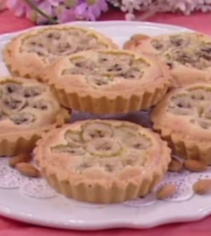

Good Morning Cocktail, i drink mattutini di Roma | Coqtail Milano
 Community Video VideoEspolòn Paloma Mix per il 22 maggio
Che cos’è la Tahona Society? Intervista a Davide Capodicasa, finalista 2020
Negroni Twist, la ricetta di Giorgio Facchinetti
Barman BarmanIl World Cocktail Day si celebra con “I cocktail mondiali” di Federico Mastellari
84 %Luca Manni, musica per i suoi cocktail
81 %Gabriele Stillitani, quando la passione per tequila e mezcal si miscelano al digital
Ricette Ricette10 cocktail per l’estate freschi e facili da preparare
Il Golden Cadillac, ricetta e storia di un classico della mixology
Cocktail al gelato, tre ricette per l’estate di Mattia Pastori
Locali LocaliEstate 2021 al The Court, il cocktail bar di Palazzo Manfredi a Roma
The Chedi Andermatt presenta la sua nuova drink list mitologica
Visitare Bellagio con il cocktail tour (in 10 drink) del Nenè Food and Drinks
Mixology MixologyCocktail Estetica, un libro dedicato al design dei drink
Quali sono i bicchieri da cocktail e perché sono tutti diversi
Cocktail alla menta, cinque miscele fresche per l’estate
Pairing PairingArdbeg Scorch a Milano da Identità Golose: una cena stellata e cocktail a base whisky
Paolo Viola firma il menu con cocktail pairing di Vineria Modì Restaurant
Cocktail e barbecue: 5 drink per 5 tipi di carne
Spirits SpiritsGli innumerevoli volti dello shochu, il “non whisky” miscelato in due ricette inedite
Triplo Oro per Bobby’s ai World Spirits Awards 2021
Diplomatico Seleccion de Familia arriva in Italia
Città CittàPre dinner e after dinner da Tomà a Roma, tra le tapas e i cocktail
Riapre il Metropolita cocktail bar a Roma
I cocktail invisibili di Antonio Lai, due ricette per l’Italia
News NewsArriva la St Petersburg Cocktail Week 2021
Luca Manni è il nuovo Bar Manager del cocktail bar Caffè Concerto Paszkowski a Firenze
L’Amaro Underberg e la sua ricetta segreta compiono 175 anni
News Eventi Contatti Stai Leggendo Good, anzi –Drink Morning! Per il Treefolk’s Public House di Roma la mattina è alcolica Condividi Tweet Giorgia Giuliano · Città · Novembre 28, 2020Good, anzi –Drink Morning! Per il Treefolk’s Public House di Roma la mattina è alcolica
Il locale romano, di recente apertura, ha annunciato la sua nuova drink list: si chiama “Good Morning Cocktail” ed è per soli mattinieri
Pare che il Treefolk’s Public House stia rendendo Roma un po’ più british .
Del resto, non capita tutti i giorni che un’ambizione coincida esattamente con un’esigenza. Il momento storico che stiamo attraversando ha stabilito una certa distanza tra noi e il bancone e per adesso, il così sacro aperitivo non possiamo che concedercelo a casa –un po’ rendendolo homemade con ricette fai da te e un po’ ricorrendo al cocktail delivery che, suonando al campanello, ci salva molte volte.
Insomma, la mission del Treefolk’s Public House di Viale Trastevere a Roma è ben chiara. Ed è praticamente già realizzata: “importare” quella buona abitudine inglese anche nella Capitale –ossia quella di consumare i drink anche al mattino.
I Good Morning Cocktail del Treefolk’s Public House
Ed ecco che i morning cocktail del locale che, ricordiamocelo, è tra le aperture recenti, risvegliano gli animi assetati del mattino e risvegliano tutti voi proprio in questo momento che, mentre leggete questa news , già pregate sia l’ora di un Bloody Mary mattutino.
Pensate che il Treefolk’s Public House , nella sua nuova drink list ne comprende ben sei: c’è quello con tequila , quello col whisky , persino quello nella veste più esotica combinato a nettare di mango. E, per i più gagliardi, è consigliato uno Scotch and blood a base di brodo d’anatra, scotch scozzese e l’immancabile succo di pomodoro.
Scusateci se siamo già andati dritti al sodo della nuova drink list del Treefolk’s Public House che si chiama “Good Morning Cocktail” (che tra l’altro ha una grafica pop che è pazzesca) ma lei per prima ci insegna che non ci sono tempi prestabiliti per dare una notizia né tantomeno per bere un cocktail al mattino .
Una drink list mattutina
Il Food and Beverage Manager del locale , Michele Ferruccio , insieme a tutto il team del locale , ha condensato persino in questa nuova proposta di mixology un concetto importante. Che più che mai vuole mostrare l’importanza e la netta centralità del cliente: l’ ospitalità .
E a oggi lo ha fatto con una drink list minimale, mattutina, senza sprechi e con influenze dal mondo della pop art.
“Good Morning Cocktail” fa da collante ai molteplici animi del Treefolk’s Public House : le birre (ve lo avevamo detto, no, che il locale ha una vera e propria collezione di birre e di birre alla spina), il caffè che tra l’altro è il protagonista di un altro drink del mattino .
I drink mattutini di Treefolk’s Public House
L’ Espresso Martini , che, in una variante particolarissima del locale, è rivisitato sino a diventare un Cremini Martini . Un cocktail in crescendo la cui preparazione si conclude al tavolo, proprio davanti agli occhi dei clienti e che viene servito su di un elegante vassoio da tè.
Sempre parlando di caffè, un altro suggerimento che ci viene dal cuore è il Cold Brew Bourbon : un drink in cui è il distillato stesso, il whiskey , ad essere trattato e lavorato proprio come un Cold Brew, ossia attraverso una percolazione a freddo, lasciandolo filtrare attraverso il caffè (etiope) e poi miscelato alla dolcezza dello zucchero e degli aromi alla banana.
A rimpiazzare i succhi di frutta e le spremute d’arancia della colazione, un Real Punch con sidro alla frutta e spezie oppure un mojito frizzante –l’Exotic- con whisky e un fermentato di zenzero e menta. E che vi piaccia o no (ma in fondo come potrebbe non piacervi?) c’è persino il Welcome Mimosa dove a succo d’arancia e prosecco si aggiungono bergamotto e zenzero.
Gli analcolici e i low alcol
Sappiamo che, in fin dei conti, ci si deve ancora abituare completamente all’idea di una mattinata alcolica , ecco perché il Treefolk’s Public House comprende anche alcune proposte low alcol . Il Welcome Mimosa è tra questi.
Ma il locale propone anche cocktail completamente analcolici . Se possiamo chiamarli drink ?
Certo che sì, visto che –il Fake Fizz in particolare è realizzato un distillato analcolico a base di spezie e radici provenienti dalle campagne inglesi.
Ma aspettatevi sempre di avere a che fare con drink impreziositi dai tasselli fondamentali del locale: le spezie, il caffè, gli spirits , le birre.
La nuova drink list “Good Morning Cocktail” del locale romano Treefolk’s Public House rimpiazza il “cappuccio e brioche” che ci ha sempre e sin troppo coccolati.
Però, come si dice? Bisogna bere per dimenticare.
Credits Immagini Alberto Blasetti
Tags Brunch Drink list Roma Treefolk's Public House Condividi Giorgia Giuliano Correlati CittàPre dinner e after dinner da Tomà a Roma, tra le tapas e i cocktail
CittàRiapre il Metropolita cocktail bar a Roma
CittàI cocktail invisibili di Antonio Lai, due ricette per l’Italia
7 CittàBardem Cocktail Bar a Helsinki, come realizzare un branding di successo
Precedente 10 prodotti mixology da acquistare per il Black Friday 2020 Successivo Idromele o idromiele? Perché è facile confondersiUn commento
Pingback: Tre cocktail alla birra di Michele Ferruccio | Coqtail MilanoI commenti sono chiusi.
Articoli Consigliati
Ricette10 cocktail per l’estate freschi e facili da preparare
RicetteIl Golden Cadillac, ricetta e storia di un classico della mixology
RicetteCocktail al gelato, tre ricette per l’estate di Mattia Pastori
Seguici sui nostri canali social
Categorie
Barman Città Eventi Locali Mixology News Pairing Ricette Spirits Video Facebook Instagram YouTube Linkedin Privacy Policy Cookie PolicyNewsletter
Iscriviti alla newsletter di Coqtail Milano!
Privacy Policy ©2021 Coqtail Milano Community Video Barman Ricette Locali Mixology Pairing Spirits Città News News Eventi Contatti